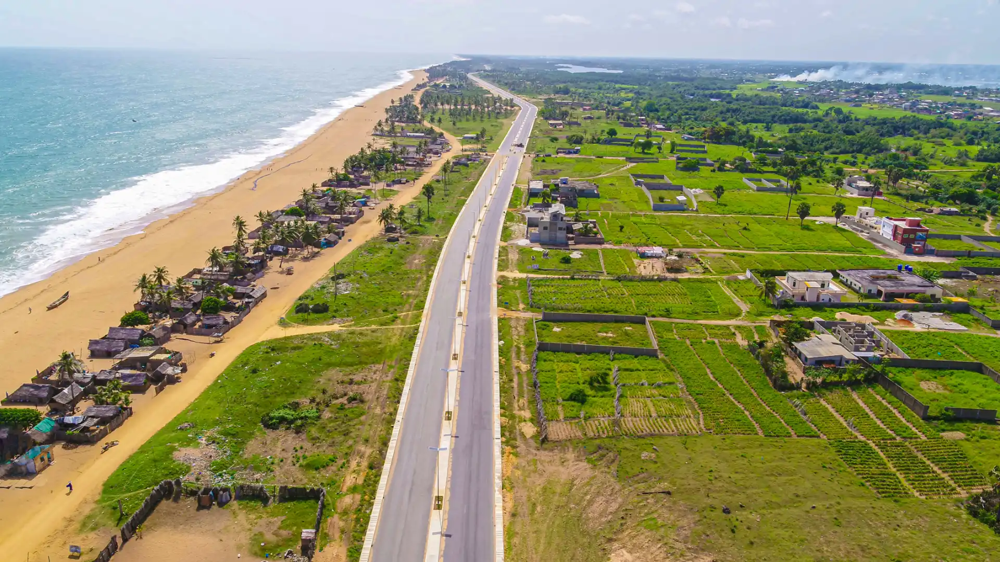
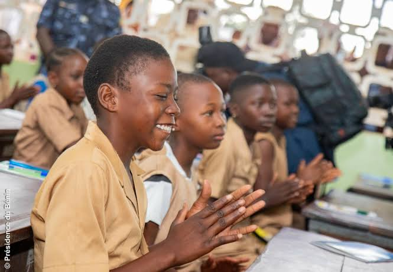
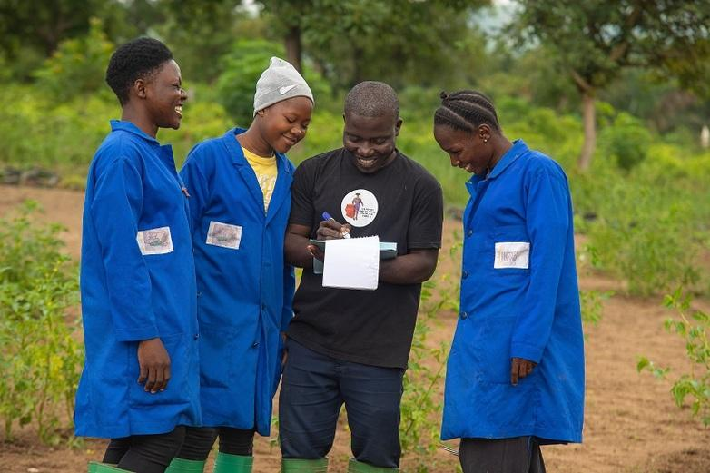
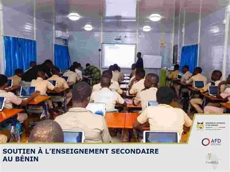
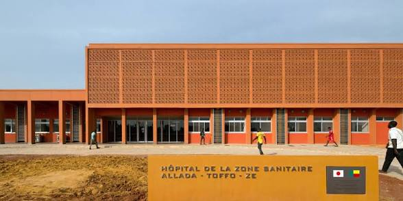
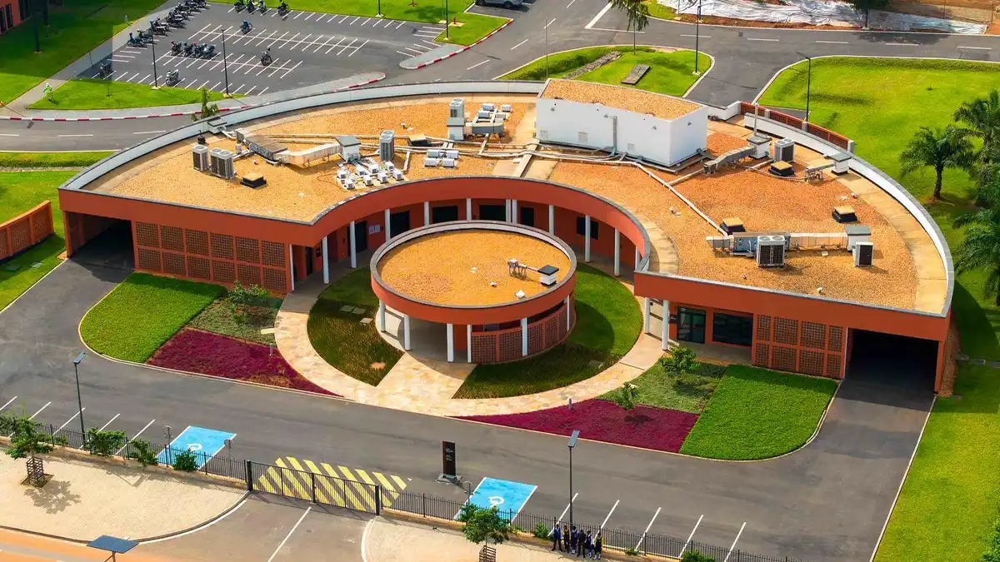
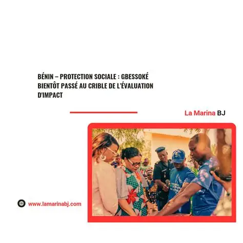
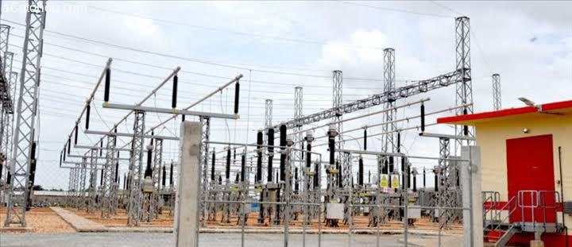
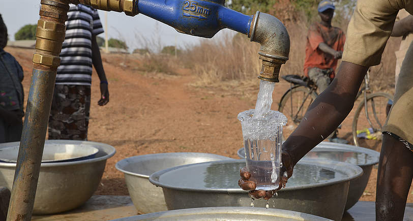
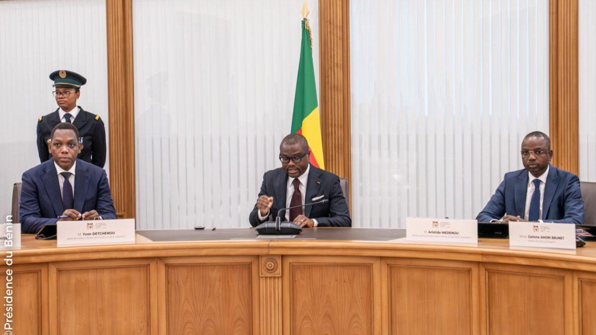

Réalisations et Projets
Découvrez différents domaines prioritaires du développement économique et social du Bénin.
Ces domaines permettent de mieux comprendre les enjeux liés aux politiques publiques et à la modernisation du pays.
📚 Éducation et formation

📚 Éducation pour tous
L'éducation représente un secteur essentiel pour la formation des jeunes et la préparation de l'avenir du pays.

🎓 Formation professionnelle
Le développement des compétences techniques et professionnelles contribue à l'insertion des jeunes.

📖 Enseignement
L'amélioration de la qualité de l'enseignement constitue un enjeu important pour le développement.
🏥 Santé et protection sociale

🏥 Infrastructures sanitaires
La modernisation des établissements sanitaires permet d'améliorer la qualité des soins.

❤️ Accès aux soins
L'accès aux services de santé est un élément fondamental du bien-être des populations.

🩺 Protection sociale
Les mécanismes de protection sociale participent à la réduction des inégalités.
🛣️ Infrastructures et modernisation
🛣️ Routes et transports
Le développement du réseau routier facilite les déplacements et les échanges commerciaux.

⚡ Énergie
L'accès à l'électricité représente un facteur important de croissance économique.

💧 Eau potable
L'amélioration de l'accès à l'eau potable participe à la santé et au bien-être des populations.
📊 Économie et développement
💼 Entrepreneuriat
Le soutien aux entreprises et à l'entrepreneuriat favorise la création d'emplois.
🌍 Investissements
L'attraction des investissements contribue à la transformation de l'économie nationale.
🤝 Coopération
Les partenariats régionaux et internationaux favorisent les échanges et le développement.
Le développement du Bénin
Coopération internationale
Les échanges et les partenariats internationaux contribuent au développement du pays.

Rencontres institutionnelles
Les rencontres institutionnelles permettent d'échanger sur les orientations et les projets publics.
Un développement multidimensionnel
Le développement national repose sur plusieurs domaines complémentaires : l'éducation, la santé, les infrastructures, l'économie et la coopération internationale.
Cette présentation est pédagogique et ne prétend pas attribuer personnellement chaque projet à une personnalité politique.